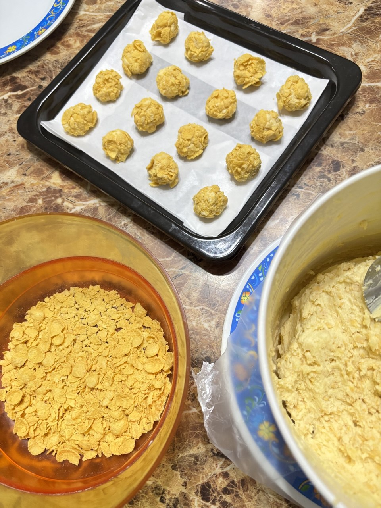
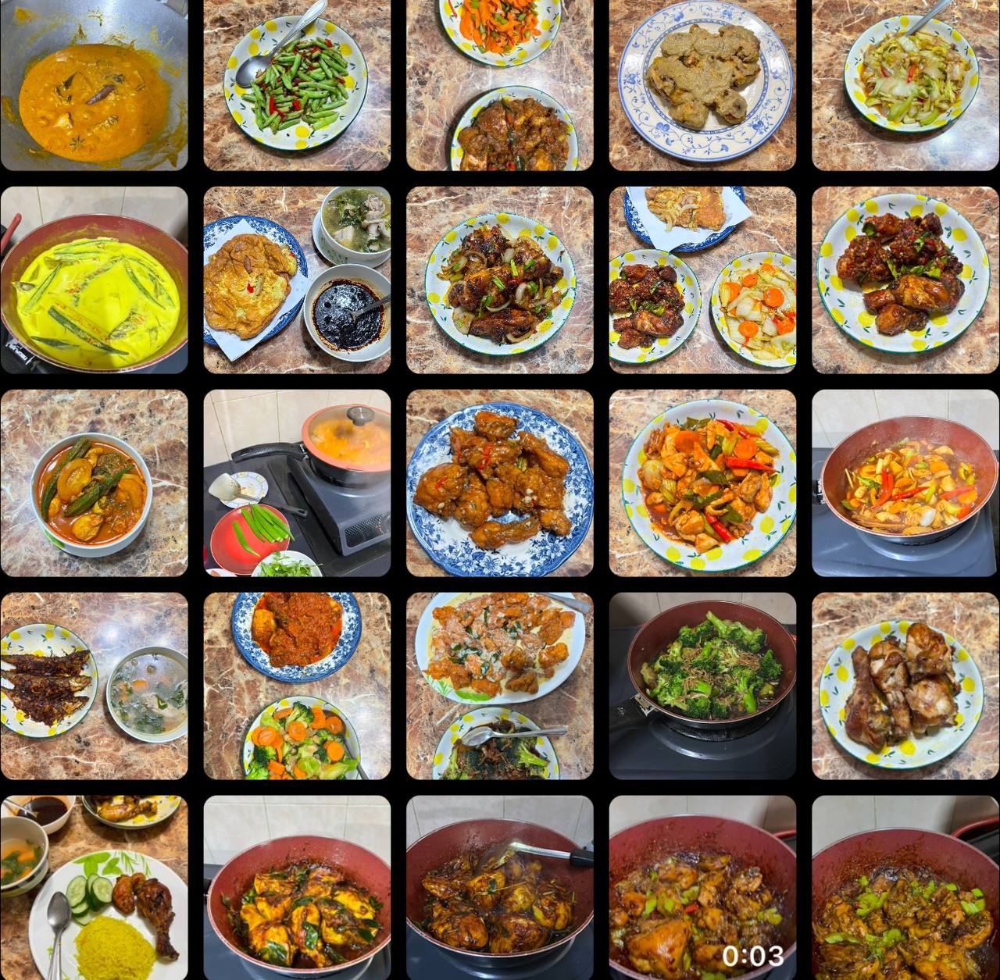
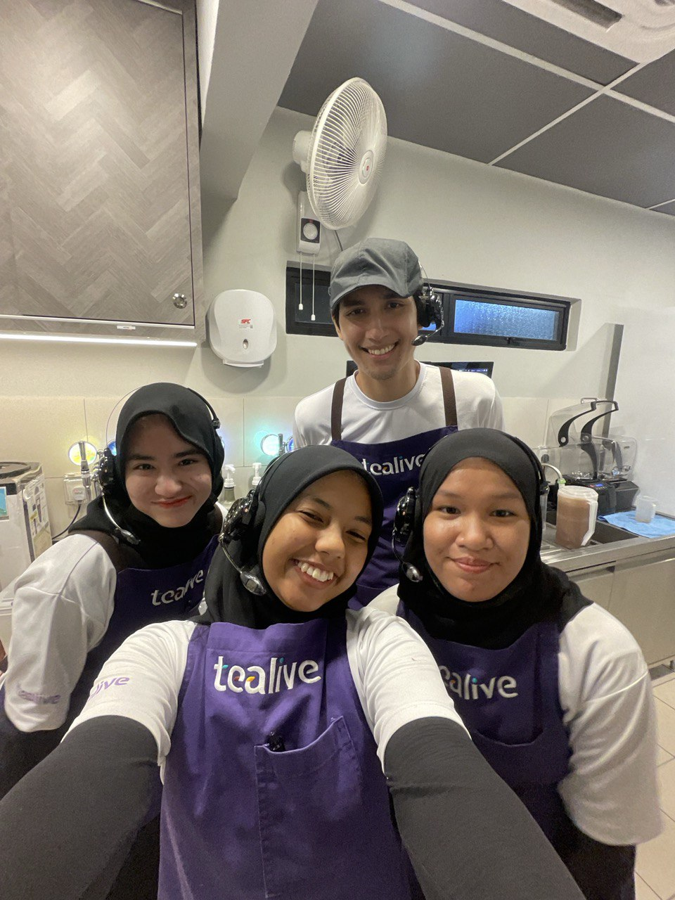
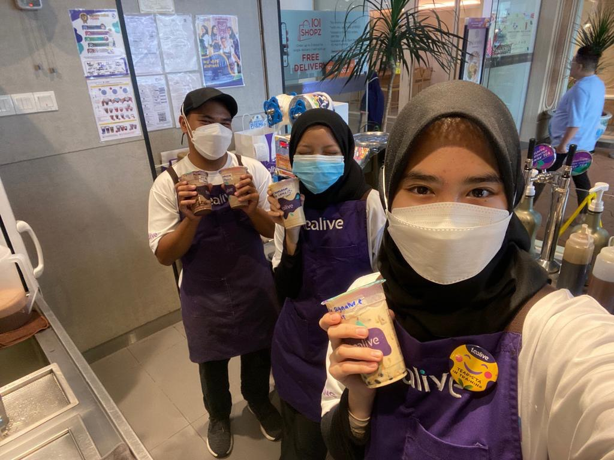
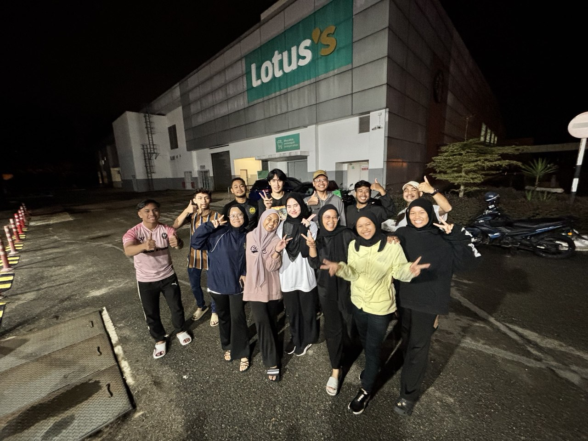

I am multilingual, proficient in English, Bahasa Melayu, Mandarin, and German, which allows me to communicate effectively across diverse cultural backgrounds. My strong interpersonal skills include active listening, empathy, and adaptability, enabling me to connect with people easily and foster meaningful relationships. I am an excellent team player, capable of collaborating with others while also taking initiative when needed. Additionally, my ability to resolve conflicts and maintain a positive attitude in challenging situations makes me an effective communicator in both professional and social settings.
Apart from that, I am also skilled in cooking and baking, which allows me to express creativity through food while mastering precision and patience. I enjoy experimenting with different cuisines and techniques, whether it’s crafting a perfectly baked dessert or preparing a flavorful home-cooked meal.
|  |  |
|---|
Working at Tealive was an incredible experience for me, as it was my first job ever. During my first stint from 6 June 2023 to 30 August 2023 and I returned for a second time from 1 August 2024 to 6 October 2024, I had the opportunity to meet amazing people and learn valuable skills. The job taught me teamwork, time management, and how to handle customers efficiently in a fast-paced environment. It also helped me develop a strong work ethic and adaptability, making it a truly memorable and enriching experience.
|  |  |  |
|---|